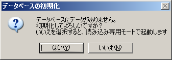

「コミックマーケット DVD-ROMカタログ」を ドライブに挿入して、起動ランチャーから「インストール」を選ぶか、 ディスクをエクスプローラから開いて、WINDOWS/SETUP.EXE をダブルクリックするとインストーラが起動します。画面の指示に従ってハードディスクにインストールして下さい。
インストール完了後はメニューから起動可能です。プログラムメニューに「コミケットカタログブラウザ」が登録されますので、それを選んで実行して下さい。
ハードディスクには以下のファイルがインストールされます。
| ccatalog.exe | カタログブラウザの実行ファイルです |
| ccatalog.db | カタログブラウザの大元のデータベースファイルです |
| ccatalog.chm | カタログブラウザのヘルプファイルです |
| cpr.ini | 印刷用の設定ファイルです |
また、インストール情報ファイルとしてsettings.ini が作成されます。 カタログブラウザのユーザ設定は、インストール時に指定したフォルダに ccatalog.iniとして保存されます。
個別ユーザ用のデータベースファイルは、同じフォルダに ccatalog.dbとして保存されます。画像データについては、DVD-ROMのままで扱える他、インストール時に同時にインストールしたり、 後から追加でハードディスクに対してインストールすることも可能です。 詳細は画像データの追加と削除をご参照下さい。
カタログブラウザは前述の4ファイルを任意のフォルダにコピーするだけで動作します。
settings.ini がない場合は、ユーザ設定ファイルは実行ファイルが存在するフォルダに ccatalog.ini として保存されます。

通常、初回起動時には個別ユーザ用にデータベースを初期化するかどうか確認されます。 「はい」を選択すると、個別ユーザ用にデータベースの内容を複製します。 「いいえ」を選択すると、標準のデータベースを「読みとり専用」として 使います。読み取り専用時は「サークルデータの追加」や 「データベースの更新」などの機能は利用できません。 ここで処理しなくても、 あとから「データベースの初期化」で再初期化 することができます。
※DVD-ROMから直接起動した場合は、setting.ini の定義により、 強制で「読み取り専用」になり、データベースの初期化もできませんのでご注意ください。
※手動でコピーインストールして、setting.iniが無い場合は、その場にある ccatalog.dbが更新可能な固有のデータベースとして扱われます。 データベースの初期化も必要ありません。